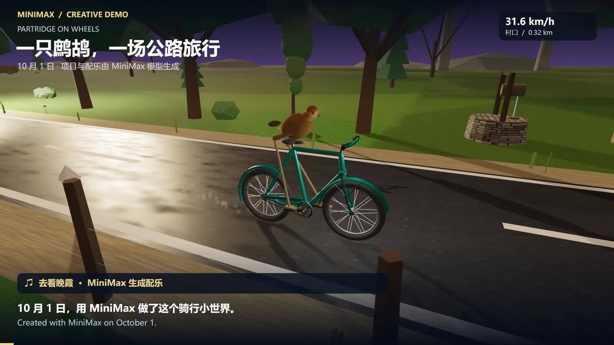
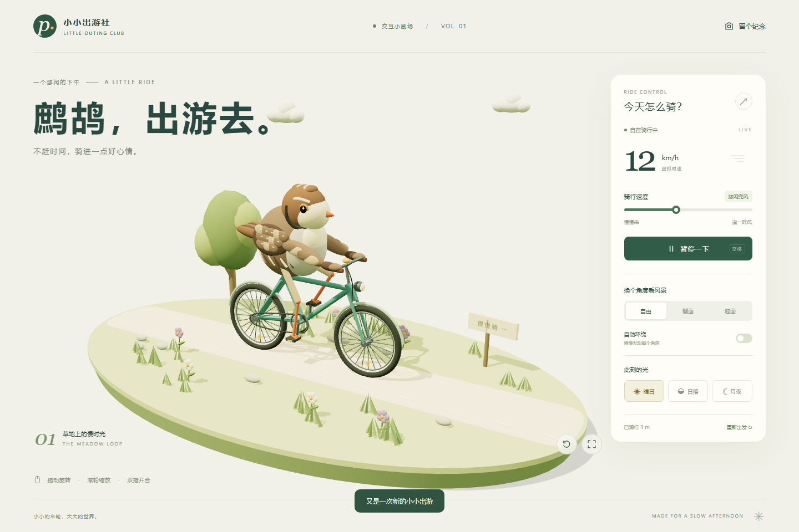

进入完整版 ↗沿着一条路，
骑进一个小世界。
六段路线、昼夜天气、自动巡航，以及 8 首配乐。保留这个案例已有的完整体验与演示视频。
历史版本 · 代码与音乐由 MiniMax 生成耗时、费用和具体模型版本未提供，未计入下方三次同题记录。
三份同题作品，亲手试试。
保留各自的最终成品
点击作品，进入交互体验
正在读取作品档案…

效果之外，把数字摊开。
时间来自任务界面，消耗来自用户账单或说明；每一个已知数字，都保留来源。
| 记录项 | GPT-6 Astra | DeepSeek-V4.1-Flash | 混元 4 |
|---|
01耗时包含各自任务过程。环境、工具、迭代次数未统一，不能直接等同于模型生成速度。
02DeepSeek 账单窗口为“近 30 天”，用户确认全属本任务。截图中的 43.1M tok 为近似显示；精确 Tokens 与费用采用账单，速率及缓存命中率采用界面原值。Tokens 无输入、输出、缓存数量拆分。
03“未提供”表示没有数据。混元本次使用免费额度，单独标注；不代表常规 API 定价。这是单次成品记录，不作模型整体排名。
成品有来处，数据有凭据。
原始截图与项目档案
方便回看，也方便后续补充
每个项目，留下一份完整档案。
提示词、原始成品、可用源码、模型记录与证据按目录保存。
三份成品原样归档，并记录文件校验值。
关于这次观察 ＋
三次测试使用同一提示词，由用户确认。展示内容是各自的最终成品，包含可能的迭代与修复，不标注“一次生成”。模型名称和设置以用户提供的截图或说明为依据。
原始成品的绘制、动画与控制代码均未为本展示站修改。体验台按需加载一个作品，也可独立打开完整页面。作品需要支持 WebGL 的浏览器；用电脑体验更方便。
Codex 的界面耗时包含实现、检查和部署等工作。混元使用 WorkBuddy 的 Hy4 preview，截图显示耗时 25 分 12 秒，用户确认本次使用免费额度，界面标注夜间免费。混元 Tokens、API 请求次数及额度扣减数量未提供；Codex 消耗未提供。
本仓库聚焦「鹧鸪骑单车」这一个案例。MiniMax 完整版是已有版本；下方档案按日期保存本次三模型同题记录，后续可在同一仓库继续补充。